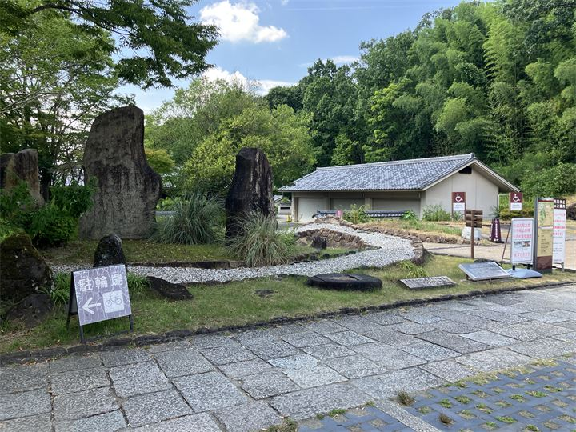
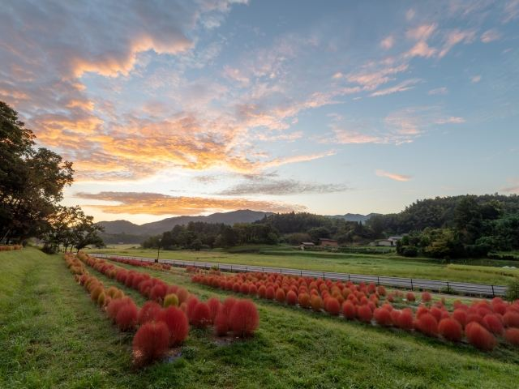
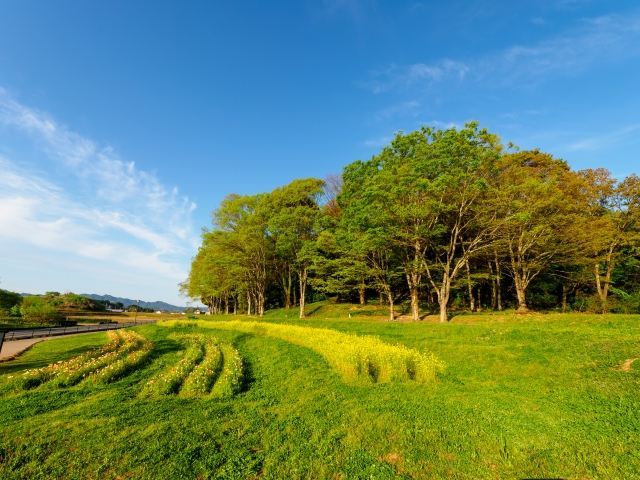

歴史遺産を巡る公園
石舞台古墳や高松塚古墳など、飛鳥を代表する歴史スポットを楽しめます。

国営飛鳥歴史公園は、飛鳥時代の歴史遺産と豊かな自然を楽しめる広大な国営公園です。 高松塚周辺地区、キトラ古墳周辺地区、甘樫丘地区、石舞台地区、祝戸地区の5地区からなり、古墳や遺跡、展望スポットなどを巡ることができます。 歴史散策や自然散歩を楽しむ、明日香観光の中心となるスポットです。
| 開園時間 |
自由散策 （一部施設は営業時間あり） |
|---|---|
| 休園日 |
なし （一部施設を除く） |
| 料金 |
無料 （一部施設・体験は有料） |
| 所要時間 | 1〜3時間 |
| 駐車場 |
国営飛鳥歴史公園 石舞台地区駐車場
甘樫丘地区川原駐車場 高松塚周辺地区駐車場 キトラ古墳周辺地区 第一駐車場 |
| アクセス | - |
| 地図 | 地図はこちら |

石舞台古墳や高松塚古墳など、飛鳥を代表する歴史スポットを楽しめます。

四季折々の自然を感じながら、ゆっくりと飛鳥の風景を楽しめます。
国営飛鳥歴史公園は、飛鳥地域に残る歴史的風土を守り、文化遺産を活用するために整備された公園です。 古代国家の中心地であった飛鳥の歴史を感じながら、遺跡や自然を楽しめる場所として親しまれています。